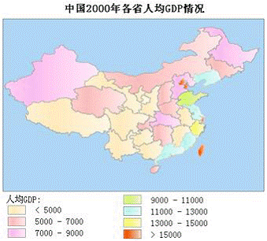

com.supermap.android.theme.Theme
com.supermap.android.theme.ThemeRange
com.supermap.android.theme.Theme
com.supermap.android.theme.ThemeRange
|
|||||||||
| 上一个类 下一个类 | 无框架 | ||||||||
| 摘要： 嵌套 | 字段 | 构造方法 | 方法 | 详细信息： 字段 | 构造方法 | 方法 | ||||||||
java.lang.Object
public class ThemeRange
范围分段专题图。
按照提供的分段方法对字段的属性值进行分段，并根据每个属性值所在的分段范围赋予相应对象的显示风格。
在分段专题图中，专题值按照某种分段方式被分成多个范围段，要素根据各自的专题值被分配到其中一个范围段中，在同一个范围段中的要素使用相同的颜色，填充，符号等风格进行显示。分段专题图所基于的专题变量必须为数值型，分段专题图一般用来反映连续分布现象的数量或程度特征，如降水量的分布，土壤侵蚀强度的分布等。
下图为一幅2000年中国各省人均 GDP 情况的分段专题图：

| 字段摘要 | |
|---|---|
ColorGradientType |
colorGradientType获取或设置范围分段专题图的颜色渐变方案。 |
ThemeRangeItem[] |
items范围分段专题图子项类数组，必设字段。 |
java.lang.String |
rangeExpression用于制作范围分段专题图的字段或字段表达式。 |
RangeMode |
rangeMode范围分段模式，RangeMode枚举类常量。 |
double |
rangeParameter分段参数。 |
| 从类 com.supermap.android.theme.Theme 继承的字段 |
|---|
themeMemoryData, type |
| 构造方法摘要 | |
|---|---|
ThemeRange()构造函数。 |
|
| 方法摘要 |
|---|
| 从类 java.lang.Object 继承的方法 |
|---|
clone, equals, finalize, getClass, hashCode, notify, notifyAll, toString, wait, wait, wait |
| 字段详细信息 |
|---|
public ColorGradientType colorGradientType
获取或设置范围分段专题图的颜色渐变方案。默认值为黄蓝。
public ThemeRangeItem[] items
范围分段专题图子项类数组，必设字段。
public java.lang.String rangeExpression
用于制作范围分段专题图的字段或字段表达式。必设字段。
public RangeMode rangeMode
范围分段模式，RangeMode枚举类常量。默认值为RangeMode.EQUALINTERVAL(等距离分段)。
public double rangeParameter
分段参数。
| 构造方法详细信息 |
|---|
public ThemeRange()
构造函数。
|
|||||||||
| 上一个类 下一个类 | 无框架 | ||||||||
| 摘要： 嵌套 | 字段 | 构造方法 | 方法 | 详细信息： 字段 | 构造方法 | 方法 | ||||||||